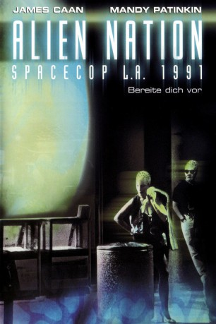
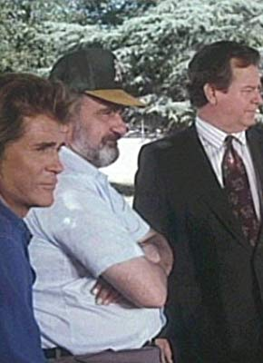

#9053 Spacecop L.A. 1991
Alternativ: Alien Nation
 
 IMDB-Wertung: 6.3 / 10
IMDB-Wertung: 6.3 / 10  Metascore: 0
Metascore: 0 
Einige Jahre nach dem ersten Kontakt mit den außerirdischen Newcomern werden diese nun nach und nach in die Gesellschaft eingegliedert. Es gibt natürlich auch Auseinandersetzungen. Bei einer solchen wird der Partner von Matthew Sykes von einem Newcomer getötet. Sykes ist noch ungehaltener über seinen neuen Partner - ein Newcomer. Beide bilden jedoch bald ein Team und kommen einem Geheimnis auf die Spur, welches das aufkeimende Verhältnis zwischen Menschen und Newcomern empfindlich stören könnte...
Jahr: 1988
Dauer: 86 Minuten
FSK: 16
Land: USA Studio: Twentieth Century FoxTonspuren: DD2.0 - ,
Untertitel:
Auflösung: 1080p (1920x824) Größe: 8611 MB
Genre: Action, Sci-Fi
Regisseur: Graham Baker
Drehbuch: Rockne S. O'Bannon
Soundtrack: Curt Sobel
Darsteller:
 James Caan als Matthew Sykes
James Caan als Matthew Sykes Mandy Patinkin als Sam Francisco
Mandy Patinkin als Sam Francisco Terence Stamp als William Harcourt
Terence Stamp als William Harcourt Kevyn Major Howard als Kipling
Kevyn Major Howard als Kipling- Leslie Bevis als Cassandra
 Peter Jason als Fedorchuk
Peter Jason als Fedorchuk Jeff Kober als Josh Strader
Jeff Kober als Josh Strader Roger Aaron Brown als Bill Tuggle
Roger Aaron Brown als Bill Tuggle Tony Perez als Alterez
Tony Perez als Alterez Brian Thompson als Trent Porter
Brian Thompson als Trent Porter Francis X. McCarthy als Capt. Warner
Francis X. McCarthy als Capt. Warner Keone Young als Winter
Keone Young als Winter-  Don Hood als Moffet
 Earl Boen als Duncan Crais
Earl Boen als Duncan Crais- Robert Starr als Coroner's Attendant
- Bebe Drake als Computer Operator
 Thomas Wagner als O'Neal
Thomas Wagner als O'Neal Frank Collison als Bentner
Frank Collison als Bentner- Angela O'Neill als Kristin Sykes
 Tom Morga als Raincoat
Tom Morga als Raincoat Regis Parton als Mr. Porter
Regis Parton als Mr. Porter Tom Finnegan als Natuzzi
Tom Finnegan als Natuzzi- Doug MacHugh als Victor Goldrup
- Shuko Akune als Police Secretary
- Jasper Cole als Neighbor (uncredited)
- Conrad Dunn als Quint
- Tony Simotes als Wiltey
- Michael David Simms als Human Dealer
- Ed Krieger als Alien Dealer
- William E. Dearth als Coroner's Technician
- Bobby Sargent als Coroner's Driver
- Edgar Small als Minkler
- Abraham Alvarez als Mayor
- Diana James als Ortiz
- Tom DeFranco als Detective
- Seth Marten als Helicopter Pilot
- Kendall Conrad als Mrs. Francisco
- Brian Lando als George Jr.
- Jessica James als Mrs. Porter
- Lawrence Kopp als Human Cop #1
- Alec Gillis als Newcomer in Bar
- Stephanie Shroyer als Female Cop
- Frank Wagner als Derelict
- Clarence Landry als Old Man Driver
- Van Ling als Newcomer #1 on TV
- Mark Murphy als Newcomer #2 on TV
- Kirsten Graham als Kid at Burger Stand
- George Robotham als Boat Captain
- Debra Seitz als Harcourt's Girlfriend
- James De Closs als Detective
Datei: X:\1988\Spacecop L.A. 1991 (1988, FSK16, 1920x824).mkv seit 19.07.2018
Festplatte: HD 1987-1991
 Es gibt insgesamt 66 Filme in der Gruppe '1988'
Es gibt insgesamt 66 Filme in der Gruppe '1988'